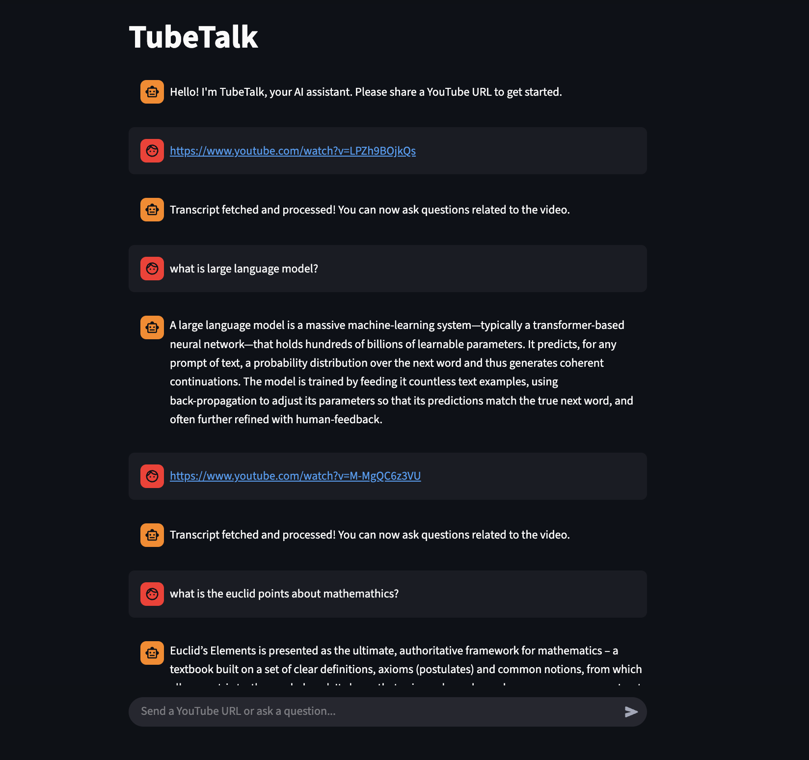

About the Project
TubeTalk is an interactive AI chatbot that allows users to have a real-time conversation with the content of any YouTube video. It fetches the video's transcript and uses a RAG model to answer specific questions, find timestamps, and summarize key points, making video content more accessible and searchable.
Key Features
- Processes any YouTube video with available transcripts.
- Answers user queries in a conversational manner.
- Provides timestamps for relevant information in the video.
- Real-time, interactive user experience.